Nació en Yapeyú, en el virreinato del Río de la Plata, en 1778. Se educó en España, ingresó al ejército y luchó contra los invasores franceses. De regreso a Buenos Aires, se distinguió en el combate de San Lorenzo (1813). Siendo gobernador de Cuyo, en 1814, apoyó a O’Higgins a reorganizar las fuerzas chilenas derrotadas en Rancagua y, en 1817, liberó Chile al frente del Ejército de los Andes. Tras la victoria de Maipú (1818), organizó el Ejército Libertador.
Desde 1820, San Martín encabezó el proceso independentista del Perú y ocupó territorios del virreinato con la ayuda de militares y montoneros. Durante su gobierno (1821-1822), inició la organización del Estado peruano creando diversas instituciones públicas. Propició una monarquía constitucional y dejó el Perú en setiembre de 1822.
28 de julio de 1870, óleo sobre tela, 193.5 x 131 cm
Proclama a los habitantes del Perú
“Paisanos: llegó en fin el momento de calmar temores, llenar los mejores votos, cumplir mis prometimientos, y asegurar para la América inquieta los resultados que el mundo todo en expectativa, tiene derecho a gozar de la revolución y libertad del Perú”.
{kind=link}
Archivo Fondo Reservado de la Universidad Nacional Mayor de San Marcos
Reproducción fotográfica
{kind=link}
Archivo Fondo Reservado de la Universidad Nacional Mayor de San Marcos
Réplica
“Me lisongeo de que os manifestareis dignos compatriotas y descendientes de Manco Capac, de Huayna Capac, de Tupac Yupanqui, de Paullo Tupac, parientes de Tupac Amaru, de Tambo Guacso, de Pumacahua”.
"Chairaycutacmi sinchita cusicuni allinta camaricuspa llactamasiyquita chasquispa imainan Manccoccapacpa, Guaynaccapacpa, Tuppayupanquec, Paulloccapacpa, Ata Gallpacpa Guaguancuna hina Tuppa-Amaroe, Tambo-Guacsoc, Pumaccaguae aylluncuna”.
(Traducción en quechua)
{kind=link}
{kind=link}
Proclama impresa de José de San Martín dirigida a los habitantes del Perú, Pisco, 1820
Archivo Fondo Reservado de la Universidad Nacional Mayor de San Marcos
Réplica
Siglo XX, bronce fundido y vaciado, 21 x 13 x 10 cm
1921, óleo sobre tela, 71.5 x 54 cm
El 12 de julio de 1821, poco después de que el virrey José de la Serna abandonara Lima, el general San Martín y sus tropas ingresaron a la capital virreinal. Instalado en la ciudad, el Libertador asumió una actitud muy diplomática frente a la nobleza limeña. Para calmar los recelos de los limeños, se organizaron diversos festejos y tres días después se firmó el acta de independencia en el cabildo.
Siglo XX, metal fundido, 18 x 93 cm
Esclavina de danzante con la imagen de José de San Martín
ca. 1970-1990, cartón, tela e hilos sintéticos, 47.2 x 48.1 cm
Escenografía
- 
1 Virgen del Carmen con san José y san Blas
Siglo XVIII, óleo sobre tela, 102.1 x 69 cm
2 Fanal y velón de aceite
Siglo XIX, bronce fundido con uniones mecánicas y vidrio, 56 x 24 cm
3 Escritorio
Primer tercio del siglo XIX, madera ensamblada, 135 x 95.5 x 86 cm
1 Mesa auxiliar
Mesa auxiliar
ca. 1825-1850, madera tallada y marqueteada, hueso y nácar, 45 x 53.5 cm